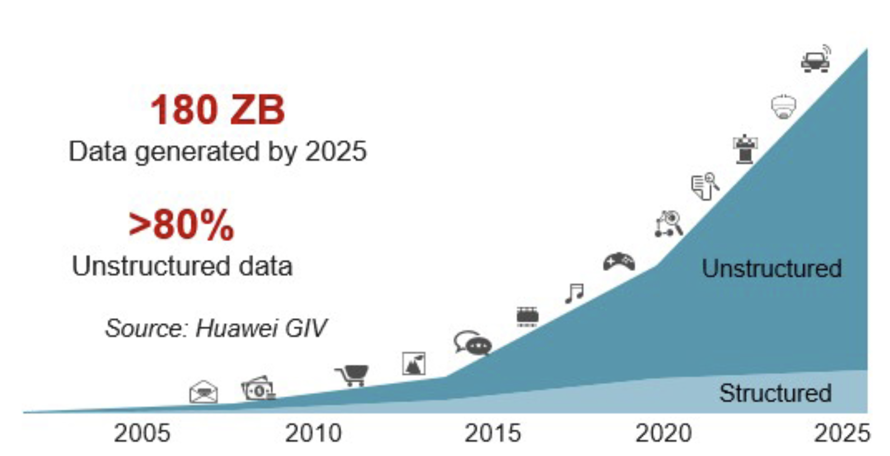
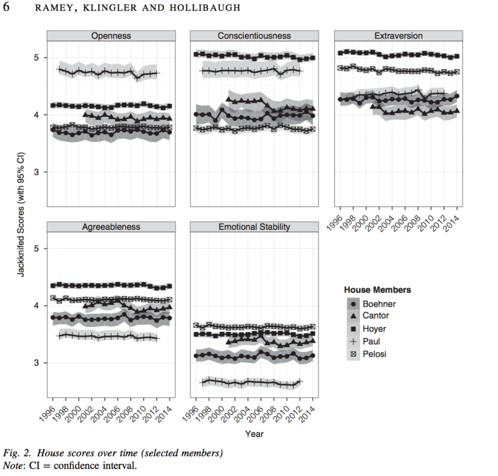
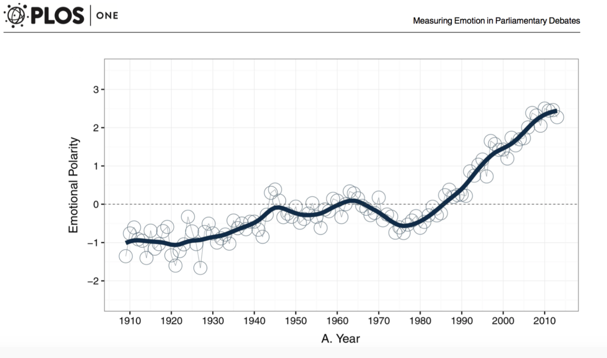
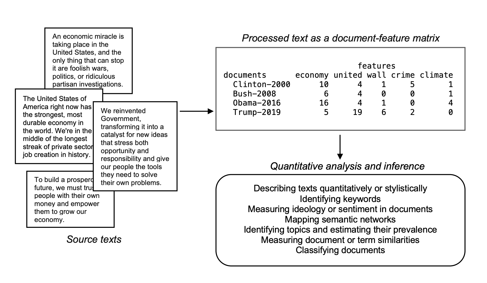
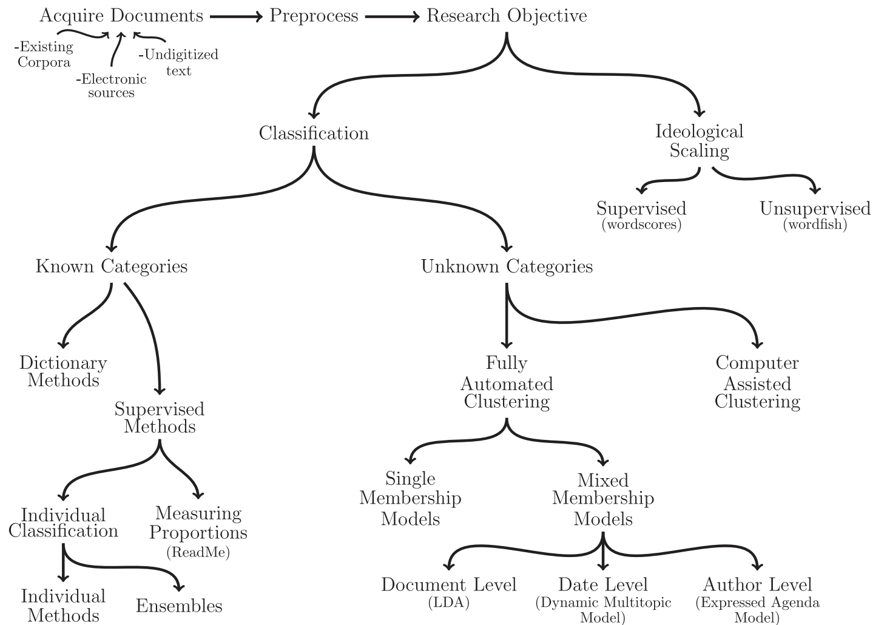
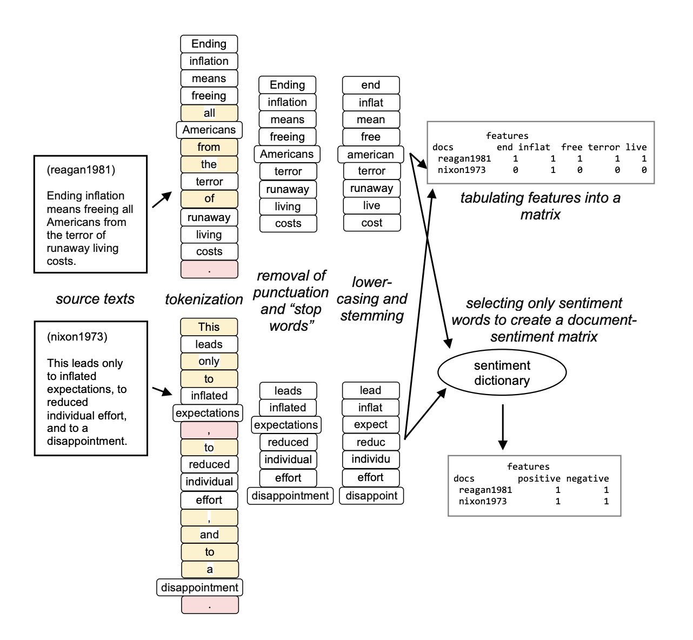
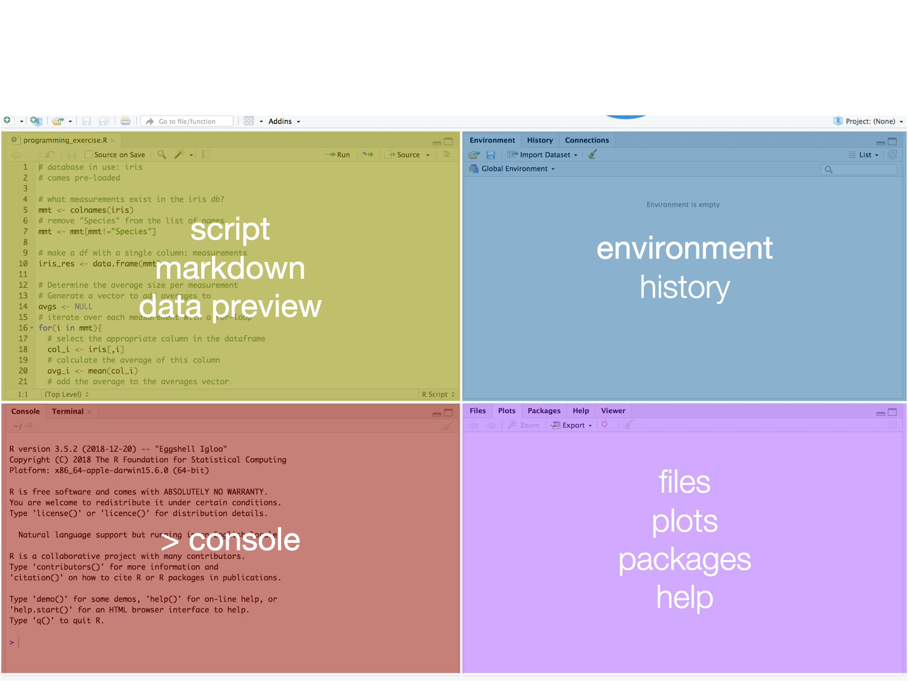

Text as Data: Week 1
Matthias Haber
8 September 2021
Goals for Today
Goals
- General introduction
- Text as data in the social sciences
- Getting you setup
Introduction
About myself
- Partner & Senior Director for Data & Analytics at Looping Group since 2018
- Postdoc at Hertie 2015-2017 (Governance Report)
- PhD in PolSci (University of Mannheim)
- Research on parties, legislative politics, electoral behavior
- First started programming in 2011
Contact:
About yourself
- Who are you?
- Why did you take this class?
- What kind of textual data are you interested in and which methods/techniques would make your life easier?
Text as Data
Text in the Social Sciences
Text is the most pervasive — and certainly the most persistent — artifact of political behavior (Monroe and Schrodt 2009)
Never before has so much text been so readily available in the social sciences: Legislative debates, party manifestos, political speeches, committee transcripts, lobbying documents, court opinions, laws, …
Unstructured Data

There is no better time to start learning how to turn text into data than now!
Text as Data Example: Scaling
Text as Data Example: Personality

Text as Data Example: Sentiment

From Text to Data

There are basically three varieties of text analysis
- Literary (Discourse) analysis -> text as text
- Qualitative text analysis -> human generated textual data
- Quantitative text analysis -> machine generated textual data
Text as Data Methods

Stages in Analyzing Text as Data (Benoit 2019)
- Selecting texts and defining the corpus.
- Converting of texts into a common electronic format.
- Defining documents and choosing the unit of analysis.
- Defining and refining features.
- Converting of textual features into a quantitative matrix.
- Analyzing the (matrix) data using an appropriate statistical procedure.
- Interpreting and reporting the results
From Text to Matrix

4 Principles of Automated Text Analysis
- All quantitative models of language are wrong—but some are useful.
- Quantitative methods for text amplify resources and augment humans.
- There is no globally best method for automated text analysis.
- Validate, Validate, Validate
Text as Data Course
This Course
- Introduction to automated text analysis methods using R
- We focus on application, not on theory
- This course should give you a skill set that you can use in your own projects and research
- Ask questions - and help each other out!
First Half - Data Wrangling Fundamentals
| Session | Session Date | Session Title |
|---|---|---|
| 1 | 08.09.2021 | Text as data (Room 2.32) |
| 2 | 15.09.2021 | Importing Textual Data (Room 2.32) |
| 3 | 22.09.2021 | Cleaning and Transforming Text |
| 4 | 29.09.2021 | String Manipulation |
| 5 | 06.10.2021 | Preparing text for analysis |
| 6 | 13.10.2021 | Descriptive analysis and visualization of text |
Mid-term Exam Week
Second Half - Supervised and Unsupervised Learning
| Session | Session Date | Session Title |
|---|---|---|
| 7 | 27.10.2021 | Dictionary Approaches |
| 8 | 03.11.2021 | Sentiment Analysis |
| 9 | 10.11.2021 | Topic Models |
| 10 | 17.11.2021 | Scaling Models |
| 11 | 24.11.2021 | spaCy - An Introduction to Industry NLP (Room 2.32) |
| 12 | 01.12.2021 | Transformers and the State of the Art of NLP (Room 2.32) |
Assignments
Over the course of the semester, you will have to complete three assignments.
Assignment 1
The first assignment will be a code completion exercise in which you’ll be given a partially complete code. Full points will be awarded if you get the whole script to work.
Assignment 2
The second assignment will involve the construction of a topic model, including a visualization and brief discussion of the results. Your grade for this assignment will be based on how you approach this task and if you follow the steps discussed in class.
Assignment 3
Your final assignment is a presentation of a research project, or part thereof, of your own choosing. The only requirement is that the project involves the analysis of text and uses the methods that we cover in the course. Please record your presentation and submit it via Moodle. Grading will be determined by the quality of the presentation and the degree to which you manage to apply the skills what you have learned during the course.
Grading
Composition of the Final Grade
| Name | Percent of Final Mark | Due |
|---|---|---|
| Assignment 1: code completion exercise | 30% | October 22, 8 am |
| Assignment 2: data analysis exercise | 30% | November 20, 8 am |
| Assignment 3: Oral presentation of your own research project | 40% | December 17, 8am |
General Readings
- Wickham, H. and G. Grolemund. 2017. R for Data Science: Import, Tidy, Transform, Visualize, and Model Data. O’Reilly.
- Silge, Julia, and David Robinson. 2017. Text mining with R: A tidy approach. O’Reilly.
- quanteda R package
Recap R & RStudio
R
- Based on the statistical programming language S (1976)
- R was developed by Ross Ihaka and Robert Gentleman (1995)
- R was intentionally developed to be a data analysis language
Why R
- Open source: makes it highly customizable and easily extensible
- Over 18,000 packages and counting
- Used by many social scientists interested in data analysis
- Powerful tool to generate elegant and effective plots
- Command-line interface and scripts favors reproducibility
- Excellent documentation and online help resources
We will work in RStudio
RStudio is an Integrated Developer Environment (IDE) and serves as:
- Code editor
- Project manager
- Workspace viewer
- Data browser
- Enhanced output viewer
- Help browser
The RStudio Interface

Basic workflow
- Edit in code editor (.r-file)
- Paste to console
- Save Workspace/Datasets (.Rdata-file)
- Save code routinely (no auto-save!)
- Press TAB to use RStudio’s autocompletion feature
Shortcuts
- Run code from editor: Select line and ctrl+Enter
- Switch between source and console: ctrl+1, ctrl+2
- Clear console: ctrl+L
- ‘Arrow up’ gives you the last line of code in the console
- Press Alt+Shift+K to see all keyboard shortcuts
Setup
Software
- Download and install latest versions of R (4.1.1) and RStudio (1.4.1717)
- Download and install Git
- for Mac OS:
brew install git
- for Mac OS:
Packages
Install the following packages:
- tidyverse
- quanteda
Setup GitHub
- Create an account on GitHub
- Open RStudio and go to Tools > Global Options… click on Git/SVN
- Check Enable version control interface for RStudio projects
- Set the path to the Git executable that you just installed. Open a shell, if you don’t know where Git is installed. Windows: type
where gitand hit enter. The path should be something like:C:/Program Files (x86)/Git/bin/git.exeLinux/OS X: typewhich gitand hit enter. The path should be something like:/usr/bin/git - Restart RStudio, if it worked out you will find the Git icon on the top toolbar.
Setup GitHub cont.
- Configure Git and set your user name and email (the email address you used to register on GitHub). You can directly open the Git prompt from within RStudio. User name and email needs to be set only once. Go to Tools > Shell to open the Git Shell to tell Git your username and GitHub email.
git config --global user.name 'yourGitHubUsername'
git config --global user.email 'name@provider.com'
Clone a GitHub Repo
Copy the repository HTTPS urlfrom the text as data repository located on https://github.com/mhaber/Text_as_Data_21. Click on Code and copy the HTTPS link of the project by clicking the little icon to the right of the URL.
In RStudio Select File > New Project.., select Version Control, Choose Git, then provide the repository HTTPS link, select the R workspace folder and create the project. RStudio now clones the content of the repository to your project folder. The content of the GitHub repository should now appear in the Files pane of RStudio.
Create your own GitHub Repo
Task: Create your own GitHub repository for this course with an appropriate README.md file and clone the repository in RStudio. Then create an .R script file with a function to print Hello World! and commit and push the new file to your GitHub repository.
Wrapping up
Questions?
Outlook for our next session
- Next week we will learn how to import textual data into R
- We will again meet in room 2.32
That’s it for today
Thanks for your attention!